8. Drawing: step by step
L / LINE
- ①Press 線分 (Line) on the ribbon, or type L in the Command Line → Enter.
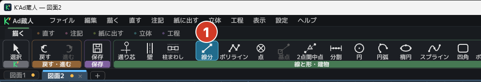
① - ②Click the first point (or give an absolute coordinate, 1000,500).
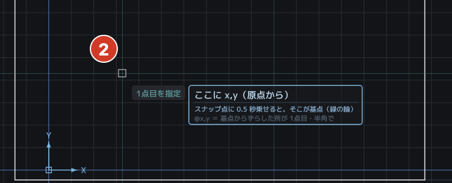
② - ③Click the second point (@1000,0, or a direction plus a number, work too).
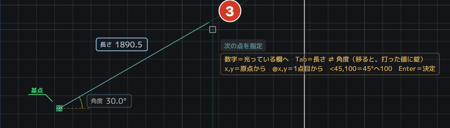
③ - ④It carries straight on. Press Esc when you are done.
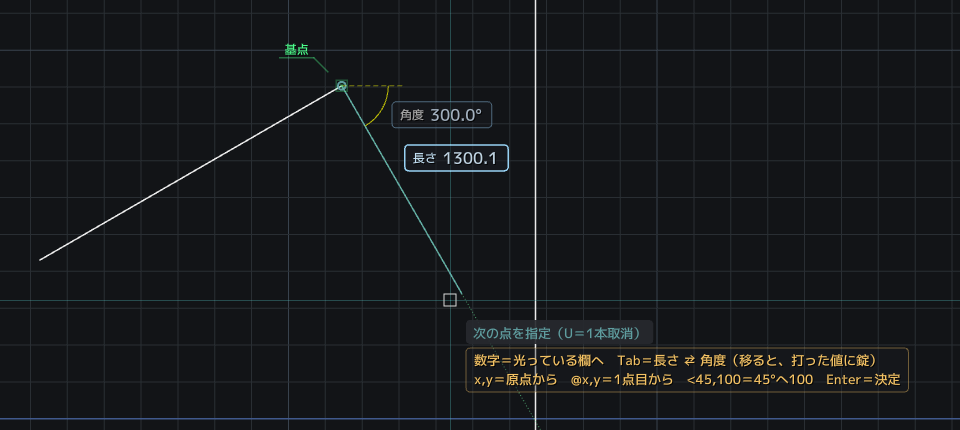
④
PL / PLINE (polyline)
- ①Press ポリライン (Polyline) on the ribbon, or type PL → Enter.
- ②Click the first point → the next → the next… (numbers work just as they do for a line).
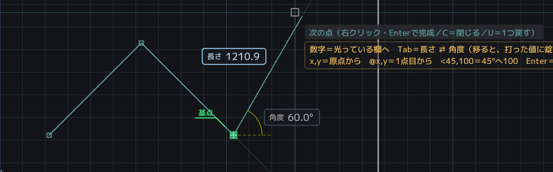
Clicking the points in order - ③Right-click or Enter finishes it = at that moment it becomes one single object. U takes back one vertex at a time. Esc throws away what you were drawing.
Making a closed polyline (a closed shape is what becomes a solid in 3D extrusion)
- Press C while drawing = a side is added from the last point to the start point and it closes. Typing C (or 閉じる) in the command box does the same.
- Clicking the start point also closes it. It snaps to the points of the polyline being drawn, so when the "endpoint" mark appears on the start point, click = it becomes a closed shape.
- Closing needs three or more vertices (with two it would only be a line going there and back).
- The only difference from a line is whether it is one object. Lines are born separately, one per stroke; a polyline gathers into one when you finish.
- Use it for outlines, site boundaries, pipe runs — anything you will later want to select whole.
- Polylines from other CAD programs open as one object and are saved back as one object.
- Trim can cut a polyline as it is (it stays one object). Cutting a closed polyline makes it an open one. A bulge (arc side) cut partway divides correctly. It can also be cut where it crosses itself (you can drop an overshooting tail). When the two cut ends meet exactly, it becomes a closed polyline.
- It can also be chosen as a cutting edge (the thing you trim back to, or extend up to).
- Fillet and Chamfer work on polyline corners. Click two adjacent sides and the corner between them becomes round (or bevelled). * No separate arc is created, so it stays one object. Other CADs open it as one piece too.
- Offset (O) fattens a polyline whole, in parallel.
- Divide (DIV) spaces points by equal arc length along the whole run. A closed shape gets exactly count points; an open one gets count-1, with none at the two ends.
C / CIRCLE
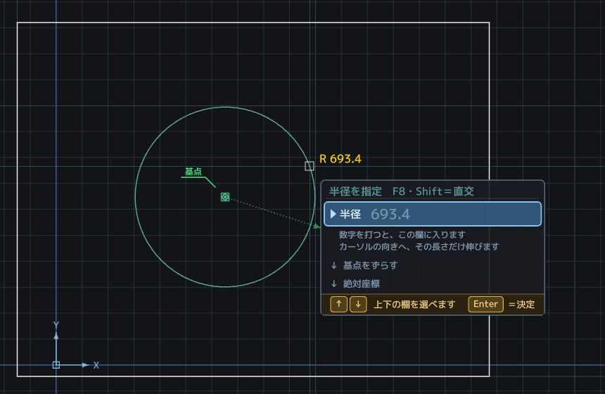
- ①Type C → Enter. Click the centre.
- ③Click a point the circumference passes through. To set the radius by number, type 4000, R2000 or D8000 (diameter) in the Command Line.
A / ARC (three-point arc)
- ①Press 円弧 (Arc) on the ribbon, or type A → Enter.
- ②Click three times: start point → a point the arc passes through → end point. From the third point on, the arc follows your cursor. Esc goes back one step = if you are unsure of the end point you can place the through point again.
- Snapping works on endpoints and intersections, so connecting arcs land exactly.
- When tracing a PDF underlay, three taps along the curve are all it takes.
EL / ELLIPSE
- ①Press 楕円 (Ellipse) on the ribbon, or type EL → Enter.
- ②Click three times: the end of one axis → the other end of that axis → the half-width of the other axis. From the third point on, the ellipse follows your cursor. Esc and right-click each go back one step.
- Take the third point longer than the axis and that becomes the major axis, standing upright (the longer one is automatically the major axis — the same rule as the original).
- It is saved as a DXF ELLIPSE just as it is, so it opens as an ellipse in other CAD programs.
SPL / SPLINE — a free curve
- ①Press スプライン (Spline) on the ribbon, or type SPL → Enter.
- ②Click, one after another, the points the curve should pass through (three or more). A smooth curve follows your cursor as you go.
- ③Right-click or Enter finishes it = one single curve. U = take back one point / Esc = throw away what you were drawing (the same as PL).
- The curve passes exactly through every point you clicked (the way a French curve is used).
- The points you clicked (the fit points) can be caught with snap afterwards. Grid lines or other lines can be brought exactly onto them.
- Use it for site contours, road alignments, decorative curves.
- It is saved as a DXF SPLINE just as it is, so it opens as one curve elsewhere, and the fit points travel with it, so it can be edited there as it is.
REC / rectangle
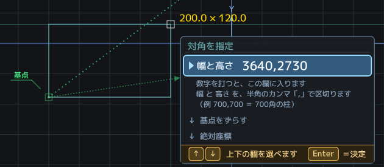
- ①Type REC → Enter. First point → click the opposite corner. To set it by size, give 700,700 (width,height) instead of the second point.
- REC C 10 = a rectangle chamfered 10 / REC F 15 = corners rounded R15. Type 0 to clear it.
- A rectangle is one whole polyline. Click any edge and the whole rectangle is selected (one-click selection). The four corners and the four edge midpoints all still snap, exactly as before. Offset (O) offsets the whole rectangle in parallel; Divide (DIV) divides the perimeter into equal parts. On the day you want just one edge, use X (explode).
POL / POLYGON (regular polygon)
- ①Press ポリゴン (Polygon) on the ribbon, or type POL → Enter. POL 6 = a hexagon (you can settle the number of sides first).
- ②Click the centre. Click the point on the radius (a number + Enter also works).
- While you draw, a bar appears at the bottom of the screen. You can choose the number of sides there (3 4 5 6 8 10 12) and whether it is inscribed or circumscribed. ← → also step the number of sides up and down.
- Inscribed = the corners sit on the circle (the radius runs from the centre to a corner).
- Circumscribed = the sides touch the circle (the radius runs from the centre to a side). * The "width across flats" of a hex bolt or nut is circumscribed. For a nut 24 across flats, use circumscribed with radius 12. Typing 12 with inscribed gives a different, slightly smaller part.
- What is born is one closed polyline (the same as a rectangle). It selects in one click, and hatch and offset work on it as they are.
- Its orientation is decided by where you take the radius point (aim straight up and a vertex points up, and so on).
GRID / structural grid lines
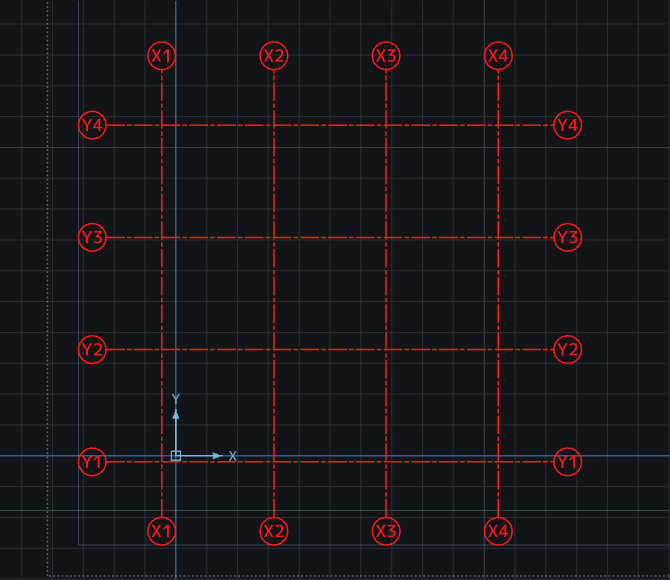
- ①Press 通り芯 (Grid) on the ribbon, or type GRID → Enter.
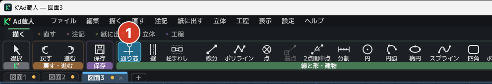
① - ②Decide the pitch and the count on the bar below. X pitch 1820, X count 6 = six grid lines (columns) at 1820 spacing. Y pitch and Y count are written the same way. A sequence such as "1820*4, 910" can also be typed in the pitch field (uneven pitch). = Use this for real-world grids where 910 or 455 are mixed in.
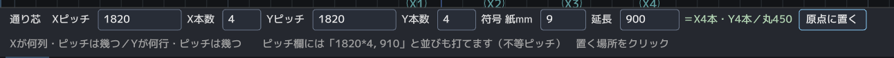
② - ③Click where to place it. Snaps work, so it sits exactly on a title-block corner too. To place it at the origin (0,0), press [Place at origin].
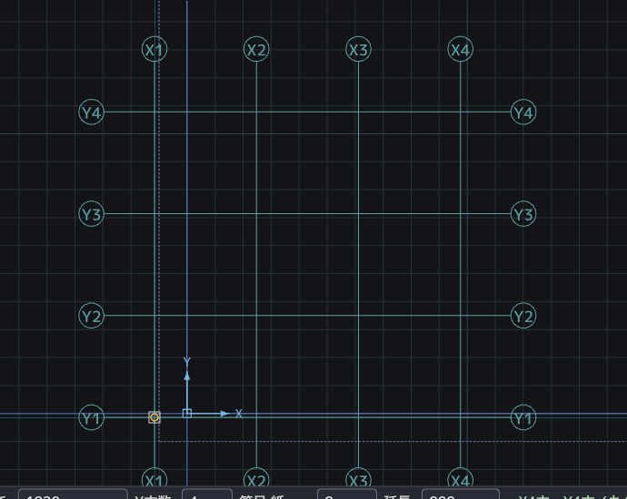
③
As you type, the ghost of the grid grows (you see it before placing). [Bubble paper mm] = the diameter of the bubble (X1, Y1). Type it in paper mm (JIS A 0150 says 9 mm). In the drawing it is multiplied by the denominator of the Page Setup scale (diameter 900 at 1:100). * On days when bubbles overlap at a narrow pitch (910 and so on), make this smaller. = All bubbles stay the same size and fit neatly. [Extension] = how far the grid lines extend outside the building (drawing units). 0 or an empty Enter returns to automatic (bubble radius × 4).
W / Wall
- ①"Wall" on the ribbon, or W → Enter in the command box. Distances: W 100,100 in the command box (= thickness 200). W 0,150 = one line at the clicked position plus one at 150 (0 = the snap point itself).
- ②Click points in order (the same rhythm as Line and Polyline). To finish with two points, right-click or press Enter there = one wall. Continue with three, four points and the corners are joined automatically (the faces connect).
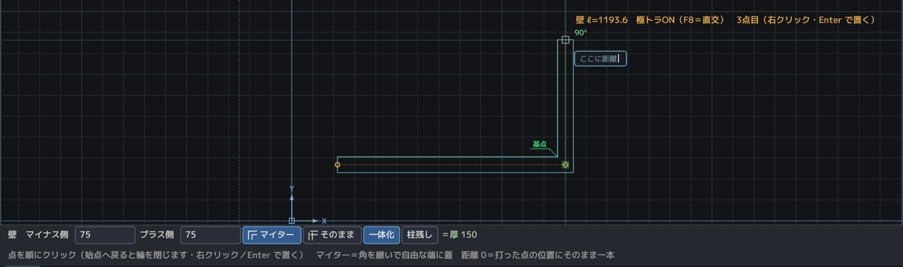
With the distances on the bar (75 and 75 = thickness 150), clicking the points in order - ③Right-click or Enter to place. Esc = discard what you have clicked / U = undo the placed wall.
- F8 = ortho (horizontal and vertical only). Polar tracking works too.
- You can also type a number + Enter ("2000 from the grid line" can be said as it is).
- Where it passes through a column (closed polyline or circle), it is cut inside the column (the column is kept).
- Corners that are too sharp are not joined; the corner is dropped (to avoid a thin needle sticking out).
WW / Wall walk = click columns in order and the wall goes around
- ①"Wall walk" on the ribbon, or WW → Enter in the command box.
- ②Decide on the bar below. [Thickness] type something like 150 (formulas work too). [Outer face / Centre / Inner face] = where the wall sits. Outer walls flush with the outer face of the columns, inner walls on the centre line — that is normal on site. [Merge / Keep columns] = whether to melt the column outlines into one outline, or keep the columns.
- ③Click the columns in order. Anywhere inside a column will do (no need to aim at a corner). Click somewhere that is not a column and the snapped point becomes a corner of the centre line (a corner without a column bends there).
- ④Return to the first column and it goes all the way round and is placed. To end partway, right-click or press Enter. When placed open, "the left of the direction of travel" is taken as the inside. If that is wrong, click in the reverse order.
- Corners and T-junctions are joined automatically. For openings, just skip them as you click.
- U = take back one clicked column / Esc = discard what you have clicked. After placing, one U takes the whole thing back.
DT (single-line text): placing one line of text with a box
- ①DT → Enter in the command box (DT 5 = text height 5 from the start; DT 右下 = specify the justification). The [Text] button on the Annotate tab does the same.
- ②Take the box the text will sit in with two opposite corners (the height of the box becomes the text height; the corners can be taken exactly with snap). 🔑 Draw a rectangle first, select it, then press DT = that rectangle becomes the box (and the rectangle stays). 🔑 Inside a table cell or a title block, use 【枠の中をクリック】 (click inside the box) on the bar = one press and it becomes the box.
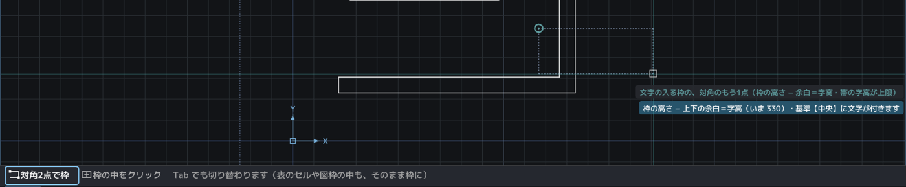
Taking the frame for the text with two diagonal points - ③Type your line on the spot and press Enter to accept (the ✓ button, or a click outside the box, do the same). Esc = cancel. There is no line break here (for notes with line breaks, use MT).
- ④The text attaches to the box exactly as the justification says (【右下】 bottom-right puts it at the bottom-right of the box, 【中央】 centre puts it dead centre).
The justification (the nine squares) can be changed at any time
- Press one of the nine squares on the bar below the box and it changes even while you are typing. The half-typed text moves inside the box before your eyes (what you are shown is what you get).
- The text height can also be corrected at any time in the field on the bar (expressions work too: 7*2).
- 🔑 The height field is in paper mm from the start (one of the two choices on the bar; it is the default). Type 3.5 and on a 1:50 drawing it is placed as 175, and prints at 3.5 mm on paper. Multiplying by the scale is the tool's job. The bar shows the result: “＝図面では 175（1:50）” (= 175 on the drawing). This is a translation at the moment you type; the text you placed stays at 175 (the tool does not touch a size a person has decided). Change the scale later and the text stays 175 = if you want text that follows the paper instead, switch its 大きさ (size) to 【紙のmm】 in Properties (PR), for the selected text only. To type in drawing units as before, press 【図面の単位】 on the bar.
- Text you have placed can be retyped by double-clicking it (rotated text keeps its angle).
Fonts: standard, light, bold, or the engraving typeface
- The Linetype / Dimension / Text bar (just under the ribbon) always carries a 【書体】 (Font) field, run the same way as the layer field. Press ▼ and a list drops down, each name drawn in its own face. Choose one and the text you type from now on uses it.
- Select text you have already placed and then choose from the list, and that text changes font (any number at once; U undoes it). The field turns pale blue to announce the font of the selected text. It is also shown on the 書体 (Font) row of the Properties panel; press it to move to the next font.
- Press the 【書体】 field on the bar and it cycles through the shelf one by one (it changes even while you are typing).
- The 文字の書体 (Text font) row in the Page Setup panel also lets you press a name and choose (again, each drawn in its own face).
- In the Command Line: 書体 機械彫刻 (or FONT kikai in English letters). 書体 ? lists what is on the shelf.
- 機械彫刻 (kikai) = a face reproducing the standard 1970s Japanese engraving-machine lettering (f.k Kikai Chokoku, by Kim). It has no φ, ±, ⌒ or ∠ and lacks some kanji, so those characters alone appear in the standard face.
- BIZ UDGothic and BIZ UDMincho (Morisawa, OFL) are included as well (Mac and Windows; they are not carried in the web version).
- The usual faces on this machine also appear under ▼ (Mac = Hiragino Kaku Gothic, Hiragino Mincho / Windows = MS Gothic, MS Mincho, Meiryo, Yu Gothic). Faces your machine does not have do not appear.
- Fonts named by drawings from elsewhere (ＭＳ ゴシック, Arial and so on) are drawn in that face if this machine has it, and substituted with the standard face if not (the same convention as the original's font substitution). ※ The web version has only the fonts shipped with it.
- To use your own font, press “＋ 書体を足す…” (Add a font…) at the foot of the ▼ list, put a TTF or OTF into the 書体 folder that opens, and restart K'Ad (it then appears under ▼; in the Command Line, 書体 filename).
- The font you chose is saved as the drawing's text style (STYLE) = it opens under the same font name in other CAD programs.
MT (multiline text): pouring a note with line breaks into a box
- ①MT → Enter in the command box (MT 5 = text height 5 from the start). The [Paragraph] button on the Annotate tab does the same. 🔑If you have already drawn a rectangle, select it and then MT = that rectangle becomes the frame as it is. (Draw it with numbers, as in `REC 590,300`, and the frame is exact.) * The selected rectangle stays as it is (it was only borrowed as a frame). Even if you use a title block or table rules as the frame, not one line is erased. 🔑To write inside a table cell or a title block, go to [Click inside a frame] on the bar (Tab also works). One press in that room and the enclosed area becomes the frame. (Table rules are through lines, so a cell cannot be selected as an "object". That is why you point at the room.)
- ②Click two diagonal points for the frame the text goes into. * Only the width is taken from the frame (= the wrap width). The height grows downward as the text increases.
- ②Next it asks the text height. Move the mouse up and down: from the top edge of the frame to the pointer becomes the height of the first line, and sample text appears at that size. Click when it is right. · Just Enter = the value in the bar's [Text height] field (3.5 at first) · typing a number and Enter also works (same unit as the bar's text height = paper mm on a paper-mm day) · right-click / Esc = stop asking for the height and go back to the first point of the frame (if you choose a height the frame is too narrow for, it says so and waits; choose again with a smaller height). Once the frame is decided, the [Width] and [Text height] fields line up on the bar. Press either to retype it on the spot. 🔑Even while typing, drag the edge of the frame and the size changes (right edge = width, bottom edge = height). The pointer turns into an arrow on the edge. The typed text stays, and the wrapping follows on the spot.
- ③Type your text into the box. · Enter = a line break (it means something different from Enter in single-line text) · Pressing ↓ on the very last line also breaks the line · Characters that run past the width wrap automatically as you type (you see them wrapping exactly as they will once placed)
- ④The part you want to fix can be selected as in a word processor. · Click inside the frame = the caret moves there · press and drag = highlight (what turns blue is "the selection") · Shift + arrows, Home and End also extend the highlight · Ctrl+A (⌘A on Mac) = highlight the whole text · type with a highlight to replace it; BackSpace / Delete erase just that part * If you leave the frame while dragging, the highlight continues (it joins up when you come back).
- ⑤Selected text can be copied, cut and pasted (the same fingers as a word processor). · Ctrl+C (⌘C on Mac) = copy / Ctrl+X = cut / Ctrl+V = paste · You can paste straight from a notepad, a spreadsheet or another CAD · paste with a highlight to replace; with nothing selected it goes in at the caret * If you paste text with line breaks into single-line text (DT), each line break becomes one space (it is a one-line vessel; if they were simply dropped, the next line would grow out of the tail of the previous one). * Pasted text wears the decorations lit on the bar at that moment (treated the same as typed text). Decorations themselves are not carried = the clipboard carries plain text only.
- ⑥Decorations (bold, italic, underline, overline, strikethrough) are on the bar under the frame. · Highlight, then press = applied to that part (press again to remove) · press with nothing selected = applied to what you type from now on (as in a word processor) · Bold is Ctrl+B, italic Ctrl+I, underline Ctrl+U (⌘B, ⌘I, ⌘U on Mac) too. What is lit is the current state. * Bold may not appear bold in other CADs (DXF expresses bold by the typeface name, and we chose not to add typeface names on our own). · Italic draws the text slanted 15 degrees (the advance does not change) · strikethrough is used as a mark of correction or deletion * Decorations are saved according to the DXF rules, so they appear as they are in other CADs.
- ⑦The text size can be changed on the spot in the [Text height] field at the right of the bar. · The field's unit is [paper mm] by default (same as DT; the two-way switch on the bar also gives [drawing units]). · Press it and it opens with the current value (you can edit from there) · formulas work (example: 40/2 → 20). Enter decides, Esc cancels * Changing it changes the wrapping too (the frame width does not change).
- ⑧Which corner of the frame the text is fitted to is set with the nine squares of [Justify] at the right of the bar. · That corner of the text comes to the point you clicked (nine ways: top-left, centre, bottom-right…) · choose the centre and it sits right in the middle of a table cell · choose the bottom and the text grows upward (top grows down, middle grows both ways) * The default is [top-left]. You can change it any time while typing. * It is not shown when re-editing (the corner of that time is kept as it is).
- ⑨There are three ways to finish. They all do the same thing. · Press 【✓ 確定】 (accept) below the box · Ctrl+Enter (⌘+Enter on Mac) · Click outside the box To give up, press Esc (right-click does the same).
- ⑩Even after placing, you can retype it. · Double-click the paragraph = the frame opens and you can continue editing · selecting it and typing DDEDIT (or ED) in the command box does the same · [Edit text] in the right-click menu also opens it · when done, finish the same way as when typing new text (✓, Ctrl+Enter, or outside the frame) · Esc closes it unchanged * You cannot confirm it empty (it stays as it was). To erase, select it and press Delete. * A tilted paragraph cannot be opened yet (explode with X and it becomes text line by line).
Choosing between multiline text and ordinary text (DT)
- A single line — a symbol, a number, a note beside a dimension → DT
- A note of several lines, a specification, a legend → MT With MT, change the width later and the wrapping follows.
Multiline text that came from another drawing
- A single block of note text containing line breaks (MTEXT) from another CAD program opens as one block, and is given back as one block when you save. The font and height it names are not used here, but we hold them for you and return them.
- The wrapping width is held too, so it wraps in the same places as it did in the other program.
- Touch it and it announces itself as “段落文字 3行” (multiline text, 3 lines). Touch any line and the whole is caught (move, copy and rotate all work as they are).
- The text size can be changed (select it, right-click → text height).
- It can be retyped (double-click). Decorations we do not use, such as typeface settings, are handed back as they are, so the drawing does not lose anything when you edit. * However, a paragraph containing decorations we cannot handle yet (colour, height factor and so on) is not opened, and the reason is given on the spot — because editing would lose them. In that case, split it into line-by-line text with X (explode) and you can retype one line at a time (* exploding loses typeface and height settings). * Tilted paragraphs, and paragraphs whose attachment corner is not top-left, cannot be opened yet either.
LE / leader
- ①Type LE → Enter.
- ②Click the tip of the arrow (it snaps to the hole or corner you want to point at).
- ③Click the elbow (the line lands horizontally from there).
- ④Give the text height with one more point (move left or right and the side the words come out on swaps; Enter = the previous height).
- ⑤Type the words and press Enter.
H / HATCH
- ①Type H → Enter (the ハッチ (Hatch) button on the ribbon does the same).
- ②Click once inside the area you want filled. That alone sets the machine looking for the shape that encloses that place, and fills it. If circles or rectangles float inside it, they are left out as islands.
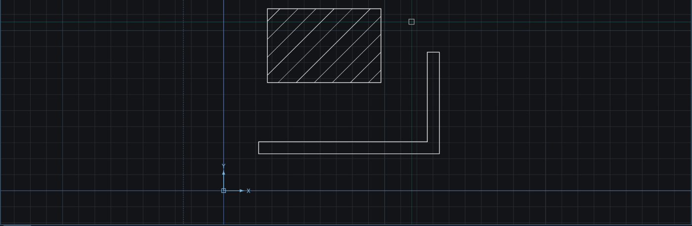
After one click inside the rectangle (choose the pattern on the bar below)
- Shapes with rounded or chamfered corners, rooms made of crossing lines, rough sketches with corners still overshooting — all of them fill with one click inside.
- It searches only the part visible on the screen. Bring the area you want filled into view before you press.
◆ When the shape is not closed (there is a gap, or the lines do not meet), it says 囲まれていません (not enclosed) and the point you pressed becomes the first point. Carry on with 【click the corners in order → Enter】 to enclose it and fill (snapping works; right-click takes back one point). Over a sketch, or where lines are missing, this way is the sure one.
- The pattern is chosen on the bar that appears at the very bottom of the screen. Nine samples sit there; just press one. ← → step through them as well. The moment you press, the preview of the area you are enclosing takes on that pattern = you can compare them on the drawing itself, before filling. (The bar appears only during the hatch command and withdraws when you finish.)
- H ? also lists what is available (and H ANSI37 names one directly).
- The fineness of the pattern (the pitch) is set with 【ピッチ】 on the bar. The default is 【自動】 (automatic) = the scale denominator becomes the multiplier directly (the patterns are defined in paper mm, so 1:20 means ×20 to give the paper look. It announces “＝紙で 12.7mm” — 12.7 mm on paper). Type a number to set it by hand (expressions work). A hatch takes the value in force when you place it, and does not move if you change the scale later.
- From the Command Line: H ANSI31 20 = hatching at a multiplier of 20 (raise the number and the pattern opens out).
- If it says the pattern would draw no lines, or too many and it stopped, correct the multiplier (the history says how many lines).
Construction symbols: beam, column, footing, mat slab, level, section arrow, drawing title
The symbols familiar from construction drawings can be typed and placed on the spot.
Three entrances = [Symbol] on the Annotate tab / 記号 in the command box / the flick shelf.
- ①A bar appears at the very bottom of the screen. From the left: beam tag, column tag, footing tag, mat-slab tag, level mark, section arrow, drawing-title box. Each shows a sample, so press to choose.
- ②Decide [Paper text height] and [Scale] in the fields on the bar. The default scale is the [Page Setup] scale (one per drawing; a new drawing is 1:50). It reads the same single scale as dashes, dimensions and hatches = there is one place to fix. When you enter the tool, the history says "matched to the Page Setup scale". If it is wrong, fix the Page Setup scale and dashes, dimensions, hatches and symbols all fit at once. To place at a different scale in this drawing only, use the field on the bar or 記号 1:50. On paper (layout) it is always 1:1. * For a drawing imported from PDF (1 unit = 1 mm on paper), name 1:1 in Page Setup. · If the size does not fit, you can also fix it after placing with [Scale (SC)]. Symbols are ellipses, lines and text, so they can be handled like ordinary objects. A symbol is decided by "how many millimetres on paper" (the JIS common value is 3.5). The drawing is full size, so in a 1:50 drawing it is placed 50 times larger. The bar also shows the product (= 175 in the drawing). * If this does not match, only the symbols come out extremely large or small.
- ③Click where it goes. Snapping works, so it drops exactly onto a grid intersection.
- ④Type it there and then. Tab = the next field / Shift+Tab = the previous / ↑↓ = the field above or below. As you type, the ellipse or the box grows to fit what is in it.
- ⑤✓ or Ctrl(⌘)+Enter accepts. Esc = cancel (the drawing is unchanged). After placing, you can carry straight on = click the next place. Finish with a right-click or Esc.
What each one looks like, and the fields you fill
- Beam tag = an ellipse divided into three by two lines. Five fields: top of the foundation beam (outside the tag, above) / top of concrete / beam mark / beam width * depth (formwork size) / added thickness (outside the tag, below).
- Footing tag = the footing mark on the left, and two rows on the right (bottom of footing / footing thickness).
- Mat-slab tag = a rectangle divided into three by two lines (top level / mark / thickness).
- Column tag = a rectangular box with three rows (column mark / section / reinforcement). No dividing lines.
- Level mark = a ▽ with a horizontal line. The apex of the ▽ is the position of that level itself.
- Section arrow = the mark (A, B) + the arrow + the right-angled end of the cutting line. The shape was built by measuring a real drawing. Draw the cutting line itself with a line (L) = its length differs from drawing to drawing, so the symbol does not carry it.
- Drawing-title box = a rectangle with the drawing name.
- A symbol you place becomes ellipses, lines and text. No special “symbol” object lives in the drawing = move, rotate, scale, trim and changing layers all work on it exactly as usual. It opens as it is in other CAD programs too.
- One press of U removes a whole symbol at once.
- For the section arrow, the direction of view and the head are chosen on the bar below.
◇ Direction of view = four (up, right, down, left) Choose the section arrow and four arrow pictures appear on the bar below. Just press one. · The way the arrowhead points = the direction you look at the drawing · The end of the cutting line folds 90° clockwise from that direction · The mark (A, B) stays upright whichever direction you choose = because that is how real drawings do it. To cut on a slant, place it and then turn it with Rotate (RO). ◇ Head (the arrowhead) = three · Single barb = the shape measured from a real construction drawing (the default). The axis of the cutting line serves as one side of the head. · Open arrow = a slim symmetrical triangle. · Hollow triangle = a stubby triangle (the same apex angle as the arrow on a real leader). None of them is “the correct one” — the drafting standards do not go as far as prescribing the shape of the arrow on a cutting line (JIS A 0150 and JIS Z 8316 both require the arrow, but neither prescribes its shape). Choose to match the practice of your office and your drawing.
- From the Command Line you can name the type, the scale, the paper text height and the arrow direction directly: 記号 梁 / 記号 1:50 / 記号 3.5 / 記号 左.
- The grid bubbles (the circles marked X1, Y1) are not placed from this bar; the grid command (GRID) raises them together with the lines (the circles are 9 mm across on paper = decided by the Page Setup scale).
Discipline "Mechanical" = geometric tolerances and projection symbols
Move between Architecture / Mechanical / Electrical / Plumbing with ▲ ▼ (or ↑ ↓) of [Discipline] at the left end of the bar.
Within that discipline, step through the symbols with ◀ ▶ (or ← →) of [Symbol]. * Vertical is discipline, horizontal is symbol = the finger directions are aligned so that you can picture a tree in your head. (Of course you can also press a symbol card directly.)
Two families now live on the Mechanical shelf.
- Geometric tolerance frames (JIS B 0021) = 14 kinds. Straightness, flatness, roundness, cylindricity, profile of a line, profile of a surface, parallelism, perpendicularity, angularity, position, concentricity, symmetry, circular run-out, total run-out. The frame is common (symbol | tolerance value | datum); only the picture of the symbol differs. The four form tolerances (straightness, flatness, roundness, cylindricity) have no datum, so that compartment is not shown. Frame height = twice the text height; the symbol compartment is square (as the standard says). The symbols are drawn with lines and circles, so they do not depend on a typeface and look the same on any desk.
- Projection symbols (JIS Z 8316 / ISO 5456-2) = two: third-angle and first-angle. The picture is a trapezoid — a truncated cone seen from the front — and a double circle seen from the small end. · Third-angle (mainstream in Japan) = double circle on the left, trapezoid on the right (short side toward the circles) · First-angle (mainstream in Europe) = trapezoid on the left (short side outward), double circle on the right. The size is [Paper text height] = the diameter of the small circle (at 3.5: large circle 7 mm, symbol height 7 mm). There is no field to type = click where to place it and place with ✓ or Enter. It is a symbol placed at its set position in the title block (not needed in drawings drawn by the arrow method).
- From the command box you can name them, as in 記号 第三 / 記号 第一 / 記号 三角法 / 記号 真直度.
Discipline "Electrical" = wiring symbols (house interiors)
These are the electrical symbols drawn on floor plans (JIS C 0303, graphical symbols for wiring in buildings).
* It is a different standard from circuit-diagram symbols (JIS C 0617). Those are for drawings of what is inside a control panel.
Nine kinds now live here: receptacle / switch / light (incandescent) / ceiling light / downlight / fluorescent light / ventilation fan / distribution board / room air conditioner.
- The size is [Paper text height] = the diameter of the circle (at 3.5, a 3.5 mm circle on paper). The same yardstick as the projection symbols = nothing to learn twice in this house.
- Side notes (the small letters written to the right of a symbol) are typed only when needed. It can be placed empty — because the standard says "15A 125V is not noted". Receptacle … 2 (duplex) / E (with earth pole) / ET (with earth terminal) / WP (rainproof) / 20A. Switch … 3 (3-way) / 4 (4-way) / 2P (2-pole) / P (pull) / L (pilot lamp). Light … 100 (watts) / for fluorescent, as in F40.
- Solid fills (the upper half of a receptacle, the dot of a switch, the triangle of a distribution board) are placed as a "solid" hatch = the edge stays a true circle however far you zoom in. * Only the upper half of a receptacle is filled because the standard says "fill the wall side".
- From the command box you can name them, as in 記号 コンセント / 記号 点滅器 / 記号 分電盤.
Discipline "Plumbing" = water supply, drainage and sanitary symbols
These are pipe valves and drainage basins (matched to the Standard Drawings for Public Building Equipment Works of the Ministry of Land, Infrastructure, Transport and Tourism).
* Plumbing has no single standard corresponding to JIS C 0303 for electrical. In practice these standard drawings and the symbols of the Society of Heating, Air-Conditioning and Sanitary Engineers of Japan are used as the common language.
Twelve kinds now live here: Valves … gate valve (GV) / butterfly valve (BV) / globe valve (SV) / check valve (CV) / ball valve (BAV) / cock (CK) / buried valve. Basins … trap basin (T) / invert basin / catch basin / public basin (公) / grease interceptor (GT).
- Four of the valves (GV, BV, SV, BAV) are exactly the same bow-tie shape. Only the code at the upper right tells them apart — the standard drawings decide it so, and the code is included from the start as part of the symbol (no need to type it).
- Side notes (nominal size and so on; e.g. 20A or 50×25) are typed only when needed. It can be placed empty.
- The symbol is placed alone. It does not include the pipe lines running before and after (the pipe should already be drawn where you place it).
- From the command box, besides 記号 仕切弁 / 記号 ため桝, you can call them by the codes you read on drawings: GV, BV, SV, CV, BAV, CK, GT (typed without switching off Japanese input).
Correct the manual there and this one is corrected the same day.
The pictures show the Windows version (retaken in November 2026). On the Mac version, Ctrl is ⌘ and Alt is ⌥.